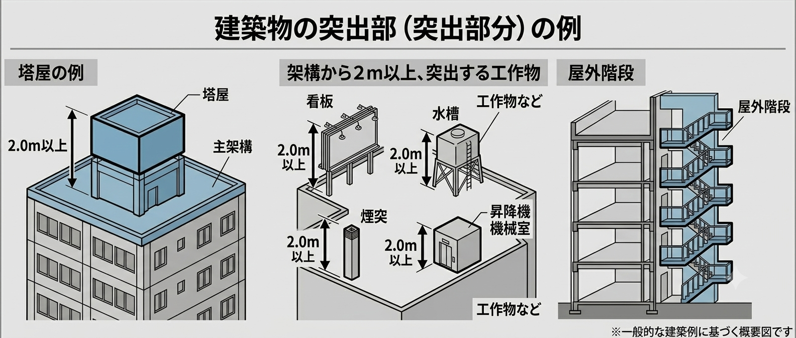

突出部の水平震度とは？1G・塔屋・地震力の計算方法と検討の無料Excel
この記事では、突出部の水平震度とは何か・どう求めるのかを整理し、塔屋や屋上突出物での地震力計算を解説します。記事末では、突出部の水平震度の検討用Excelを無料ダウンロードできます。
- 建築物の突出部とは、塔屋や屋上突出物（架構から2m以上突出する部分）のこと。
- 突出部は水平震度1.0（1G）を考慮して地震力を設計する（大地震時相当）。
- 記事末で、突出部の水平震度の検討用Excelを無料配布しています。
突出部の水平震度とは？
突出部の水平震度とは、建築物の塔屋や屋上突出物に作用する水平方向の地震力の割合のことです。突出部は、この水平震度を考慮して地震力を設計します。
突出部とは、屋上に設置される工作物や塔屋、架構から2m以上飛び出す部分を指します。これらには水平震度1.0（＝1G）が作用すると考えます。通常、建築物に作用するせん断力係数は0.2〜0.3程度、大地震時で1.0を考慮しますが、突出部は常に大地震時に相当する地震力を見込むわけです。
水平震度とは、水平方向に作用する地震力の割合のこと。突出部では k＝1.0（1G） を考慮します。なお、2mを超える片持ち梁（バルコニー・庇など）は鉛直震度を考慮します（考え方は水平震度と同じで、地震は鉛直方向にも作用するため）。
突出部に作用する地震力の求め方
突出部分の重量を Wp、水平震度を k＝1.0 とすると、突出部に作用する地震力 Q は次のとおりです。
つまり、突出部の地震力は重量の大きさがそのまま水平力として作用します。これは想像以上に大きな力です。突出物そのものの部材を確認するだけでなく、その力を受ける本体構造物（支持する架構・梁・柱）に問題がないかの検討も必要です。
突出部に該当する例
突出部に該当する代表例は次のとおりです。
- 塔屋（階段室・エレベーター機械室など、屋上に設ける小さな建屋）
- 架構から2m以上突出する工作物（看板・水槽・煙突・昇降機機械室 など）
- 屋外階段

塔屋に該当する場合は突出部として扱います。また、架構から2m以上突出する部分は水平震度を考慮します。たとえば2m以上突出して外壁だけを受ける部分なども、水平震度1.0を考慮した検討が必要です。
混同しやすい用語の整理
水平震度と鉛直震度
水平震度は水平方向の地震力の割合で、突出部では1.0（1G）を考慮します。鉛直震度は鉛直方向の地震力の割合で、2mを超える片持ち梁に適用します。どちらも地震時に突出部・片持ち部へ作用しますが、方向と適用条件が異なります。
突出部と塔屋
塔屋は屋上に設ける小さな建屋（階段室・エレベーター機械室など）で、突出部の一種です。突出部は架構から2m以上飛び出す工作物・看板・水槽なども含む広い概念で、塔屋はそのうちの一例です。
突出部の水平震度のまとめ表
| 項目 | 内容 | 備考 |
|---|---|---|
| 水平震度 | 突出部には水平震度1G（k＝1.0）を考慮 | 大地震時相当の地震力 |
| 鉛直震度 | 2mを超える片持ち梁は鉛直震度を考慮 | 鉛直方向にも地震力が作用 |
| 地震力 | Q＝Wp×k＝Wp（k＝1.0） | 重量がそのまま水平力に |
| 突出部の例 | 塔屋・看板・水槽・煙突・屋外階段など | 架構から2m以上突出する部分 |
検討用Excelの使い方
配布するExcelは、突出部の重量などを入力すると、水平震度（1.0）を考慮した地震力を自動計算する検討シートです。
- STEP1 入力欄に突出部の重量 Wp などの数値を入力します。
- STEP2 数式の入った自動計算欄は触らずにそのままにします。
- STEP3 算出された地震力 Q をもとに、突出物および本体構造物への影響を確認します。
検討用Excelの無料ダウンロード
突出部の水平震度 検討用Excel
上で解説した検討シートを無料でダウンロードできます。突出部の重量を入力するだけで、水平震度を考慮した地震力を確認できます。
※ Microsoft Excel（.xlsx）。計算結果は設計者ご自身の責任でご確認のうえご使用ください。
本記事とExcelは、突出部の水平震度の考え方を理解するための解説資料です。実際の設計では、採用する基準（建築基準法・技術基準解説書ほか）や条件に応じた確認が必要です。計算結果は設計者ご自身の責任でご確認のうえご使用ください。
参考文献
- 建築物の構造関係技術基準解説書（2025年版）
- 大阪府 構造計算適合性判定 指摘事例集（PDF）
まとめ
- 突出部（塔屋・屋上突出物・架構から2m以上突出する部分）は、水平震度1.0（1G）を考慮する。
- 地震力は Q＝Wp×k＝Wp。重量がそのまま水平力になるため大きい。突出物だけでなく本体構造も確認する。
- 2mを超える片持ち梁は鉛直震度を考慮する。方向と適用条件の違いを押さえる。
地震力の基本は「地震力の計算方法｜Ai分布・Z・Rt・Co」、計算の全体像は「許容応力度計算とは？」、荷重は「固定荷重・積載荷重の拾い方」をどうぞ。